Contents
Tutorial on supervised learning using pmtk3
This page was auto-generated by publishing http://pmtk3.googlecode.com/svn/trunk/docs/tutorial/tutSupervised.m.
We provide a description of the main methods for fitting and using univariate conditional density models of the form  and
and  where y in R for regression and y in {1,...,C} for classification, and where x is some kind of feature vector.
where y in R for regression and y in {1,...,C} for classification, and where x is some kind of feature vector.
%{ %% Models % The following is a list of pmtk models that are designed for % supervised learning (in alphabetical order) % % * 'discrimAnalysis' (linear, quadratic or regularized discriminant analysis) % * 'linreg' (linear regression) % * 'logreg' (logistic regression, binary and multiclass) % * 'mlp' (multilayer perceptron, aka feedforward neural network) % * 'naiveBayes' (Naive Bayes classifier) % * 'svm' (support vector machine) % % More models may be added in the future. % % naiveBayes and discrimAnalysis are generative classifiers, which have the % form $p(y,x|\theta)$ for y in {1,...,C}. The remaining models are discriminative % models. % %% Methods % Below we describe the main 'methods' that can be applied to these models. % Note that these are just Matlab functions, but we will sometimes call % them methods since they behave like object-oriented methods. % % Note that *not all models support all methods*. % To find out if a model of type foo supports method bar, % just type |help fooBar|. If you get an error, then you know % that foo does not implement bar. % %% Creating a model % To create a model of type 'foo', use one of the following %% % model = fooCreate(...) % manually specify parameters % model = fooFit(X, y, ...) % Compute ML or MAP estimate of params % model = fooFitBayes(X, y, ...) % Compute posterior of params %% % where % % * '...' refers to optional arguments (see below) % * X is an N*D design matrix containing the training data, % where N is the number of training cases and D is the number of features. % * y is an N*1 response vector, which can be real-valued (regression), % 0/1 or -1/+1 (binary classification), or 1:C (multi-class). % % It is straightforward to handle NaNs (missing values) in X when fitting a % generative model; however this functionality is not yet supported. % NaNs in y correspond to semi-supervised learning, which % is not yet supported. % % The resulting model is a Matlab structure, rather than an object. % However, we will sometimes call it an object, since it behaves like one. % % In the case of fooCreate and fooFit, the parameters are point estimates. % In the case of fooFitBayes, the parameters are represented as % distributions; this is often represented parametrically in terms % of the hyper-parameters. The details will be explained below % when we look at specific model classes. % % % As an example, we can fit a linear regression model to the caterpillar % data set as follows (using |linregBayesCaterpillar|): %% clear all X = loadData('caterpillar'); % from http://www.ceremade.dauphine.fr/~xian/BCS/caterpillar y = log(X(:,11)); % log number of nests X = X(:,1:10); [model] = linregFit(X, y) % MLE %% % Or we can use Bayesian methods [modelB] = linregFitBayes(X, y, 'prior', 'uninf') % uninformative Jeffreys prior %% %% Examining the model's parameters % If you fit by the model by ML/MAP estimation, you can examine the % parameters by typing |model.params|, where |params| is the name of the % parameter you are interested in (this varies from model to model, % as we saw above). % % If you fit the model by Bayesian inference, you can examine % summaries of the posterior using %% % post = fooParamBayes(model) % % This computes the marginals of each parameter, and displays % the posterior mean, standard deviation and 95% credible interval % as a latex table. % A simple way to assess if a coefficient is significantly different from 0 % is to see if its 95% CI excludes 0 or not. If it does, we can put % a little * next to it. % For example, here is the output for the linear regression model %% linregParamBayes(modelB, 'display', true); %% % We see that coefficients 0, 1, 2, 4, 5 are "significant" % by this measure. (Other methods of testing significance, based on Bayes factors, can also be % used, but are a bit more complicated, and one cannot use uninformative % priors in such cases.) % % It turns out that in this particular example, the Bayesian analysis is % identical to a classical frequentist analysis (because the posterior % for linear regression under an uninformative Jeffreys prior is equivalent % to the sampling distribution of the MLE). To see this, let us use the % <http://www.mathworks.com/products/statistics/ stats toolbox> to fit the model and perform a frequentist analysis: %% [w, wint] = regress(y, [ones(size(X,1),1) X]); for i=1:length(w) fprintf('%5.3f, [%5.3f, %5.3f]\n', w(i), wint(i,1), wint(i,2)); end fprintf('\n'); %% % We see that the MLE is the same as the posterior mean, % and the 95% confidence interval is the same as the 95% credible interval. % (If you don't have the stats toolbox, you can use |linregFrequentist| % instead, which does more or less the same thing.) % % In general, a Bayesian and frequentist analysis may not give the same % results. In pmtk, all inference is Bayesian. %% Using a model for prediction % In machine learning, we usually care more about prediction than in trying % to interpret the fitted parameters (especially since many models of % interest are hard to interpret or even strictly unidentifiable). % % Once the model has been created, you can use it to make predictions % as follows % %% % [yhat, py] = fooPredict(model, Xtest) % plugin approximation % [yhat, py] = fooPredictBayes(model, Xtest) % posterior predictive %% % Here yhat is an Ntest*1 vector of predicted responses of the same type % as ytrain, where Ntest is the number of rows in Xtest. % For regression this is the predicted mean, for classification this is the % predicted mode (most probable class label). % The meaning of py depends on the model, as follows: % % * For regression, py is an Ntest*1 vector of predicted variances. % * For binary classification, py is an Ntest*1 vector of the probability of being in class 1. % * For multi-class, py is an Ntest*C matrix, where py(i,c) = p(y=c|Xtest(i,:),params) % % The difference between |predict| and |predictBayes| is as follows. % |predict| computes $p(y|x,\hat{\theta})$, which "plugs in" a point estimate % of the parameters, where |predictBayes| computes $\int p(y|x,\theta) % p(\theta) d\theta$ ; this is called the (posterior) predictive density. % In practice, the Bayesian approach results in similar (often identical) % values for yhat, but quite different values for py. In particular, the % uncertainty is reflected more accurately in the Bayesian approach. %% Prediction with linear regression % % As an example, consider fitting a linear regression model to some 1d data % using MLE and Bayesian methods (using |linregPostPredLinearDemo|), % and then plotting the predictions on a test set (which is just a grid of % point in the interval [-7,7]) %% setSeed(1); [xtrain, ytrain, xtest] = polyDataMake('sampling', 'sparse', 'deg', 2); fitMethods = {@(x,y) linregFit(x,y), @(x,y) linregFitBayes(x,y)}; predictMethods = {@(x,y) linregPredict(x,y), @(x,y) linregPredictBayes(x,y)}; names = {'MLE', 'Bayes'}; for i=1:length(fitMethods) model = fitMethods{i}(xtrain, ytrain); [mu, v] = predictMethods{i}(model, xtest); figure; hold on plot(xtest, mu, 'k-', 'linewidth', 3, 'displayname', 'prediction'); plot(xtrain,ytrain,'ro','markersize', 14, 'linewidth', 3, ... 'displayname', 'training data'); NN = length(xtest); ndx = 1:5:NN; % plot subset of errorbars to reduce clutter sigma = sqrt(v); legend('location', 'northwest'); errorbar(xtest(ndx), mu(ndx), sigma(ndx)); title(names{i}); end %% % We see that the main difference is that in the plugin case, the predicted % variance is constant, whereas in the Bayesian case, the predicted % variance increases as we move further away from the training data. % %% Prediction with logistic regression % As another example of this, consider fitting a binary logistic regression % model to some SAT scores, where the response is whether the student % passed or failed the class. First we compute the MLE and use a plugin % approximation for prediction, as is standard practice (from |logregSATdemo|) % %% close all; clear all stat = loadData('sat'); y = stat(:,1); X = stat(:,4); model = logregFit(X, y); [yhat, prob] = logregPredict(model, X); %ok figure; plot(X, y, 'ko', 'linewidth', 2, 'MarkerSize', 7, 'markerfacecolor', 'k'); hold on plot(X, prob, 'ro', 'linewidth', 2,'MarkerSize', 10) %% % Now we fit the model using Bayesian inference with an noninformative % Gaussian prior. By default, the fitting procedure uses a Laplace % approximation to the posterior. To approximate the predictive density, we % can plugin in the posterior mean: %% % $$p(y=1|x,D) = \int \sigma(w^T * x) N(w|\mu,\Sigma) dw % \approx \sigma(w^T \mu)$$ %% % However, this gives essentially the same result as plugging in the MLE. % To get a measure of confidence in this prediction, we can sample values % of w from their (approximate) posterior, use each such sample to make a % prediction, and then compute empirical quantiles of this distribution to % get a 95% credible interval. % This is done using |logregPredictBayes| and gives the results shown below % (from |logregSATdemoBayes|) %% model = logregFitBayes(X, y); [yhat, prob, pCI] = logregPredictBayes(model, X); figure; plot(X, y, 'ko', 'linewidth', 2, 'MarkerSize', 7, 'markerfacecolor', 'k'); hold on plot(X, prob, 'ro', 'linewidth', 2,'MarkerSize', 10) for i=1:size(X,1) line([X(i,1) X(i,1)], [pCI(i,1) pCI(i,3)]); end %% % % Not all models support Bayesian fitting or prediction (the list will hopefully grow % over time, as people add new methods). % However, all models provide some measure of confidence on their outputs. % %% Visualizing the decision boundaires % When comparing classification methods, it is useful to apply them to 2d % datasets and to plot the regions of space that get mapped to each class; % these are called decision regions, and the boundaries are called decision % boundaries. We can do this using the |plotDecisionBoundary(X, y, predFn)| % function, where predFn(X) takes a test matrix and computes the MAP % estimate of the labels for each row. % As an example of this, consider the famous XOR dataset. % Let us try fitting a logistic regression model to it in the original % feature space (from |logregXorLinearDemo|) %% close all; clear all; [X, y] = createXORdata(); model = logregFit(X, y); plotDecisionBoundary(X, y, @(X)logregPredict(model, X)); yhat = logregPredict(model, X); errorRate = mean(yhat ~= y) % We see that the method performs at chance level, because the data is not % linearly separable. We give a simple fix to this problem below, when we % discuss basis function expansion. %% Preprocessing, basis function expansion and kernels % We are free to preprocess the data in any way we choose before fitting the model. % In pmtk, you can create a preprocessor (pp) 'object', and then pass it to the fitting function; % the pp will be applied to the training data before fitting the model, and will be applied again to the test data. % The advantage of this approach is that the pp is stored inside the model, which makes sense, % since it is an integral part of the model. % % One common form of preprocessing is basis function expansion. % This replaces the original features with a larger set, thus permitting us to fit nonlinear models. % A popular approach is to use kernel functions, and to define the new feature vector as follows: %% % $$\phi(x) = (K(x,\mu_1), ..., K(x,mu_D))$$ %% % where the $\mu_j$ are 'prototypes' % and K(x,x') is a 'kernel function', which in this context just means a function of two arguments. % A common example is the Gaussian or RBF kernel %% % $$K(x,x') = \exp(-\frac{||x-x'||^2}{2\sigma^2})$$ %% % where $\sigma$ is the 'bandwidth'. % Another common example is the polynomial kerne %% % $$K(x,x') = (1+x^T x')^d$$ %% % where d is the degree. % Often we take the prototypes to be the training vectors, but we don't have to. % % Below we show an example where we fit the XOR data using kernelized % logistic regression, with various kernels and prototypes. %% clear all; close all [X, y] = createXORdata(); rbfScale = 1; polydeg = 2; protoTypes = [1 1; 1 5; 5 1; 5 5]; kernels = {@(X1, X2)kernelRbfSigma(X1, X2, rbfScale) @(X1, X2)kernelRbfSigma(X1, protoTypes, rbfScale) @(X1, X2)kernelPoly(X1, X2, polydeg)}; titles = {'rbf', 'rbf prototypes', 'poly'}; for i=1:numel(kernels) preproc.kernelFn = kernels{i}; model = logregFit(X, y, 'preproc', preproc); yhat = logregPredict(model, X); errorRate = mean(yhat ~= y); fprintf('Error rate using %s features: %2.f%%\n', titles{i}, 100*errorRate); predictFcn = @(Xtest)logregPredict(model, Xtest); plotDecisionBoundary(X, y, predictFcn); if i==2 hold on; plot(protoTypes(:, 1), protoTypes(:, 2), '*k', 'linewidth', 2, 'markersize', 10) end title(titles{i}); end % We discuss how to choose the parameters of the kernel functions below. %}
Overfitting, regularization and MAP estimation
Using maximum likelihood to train a model often results in overfitting. This means that the model fits the training set well, but is overly complex and consequently performs poorly on test data. This is easiest to illustrate in the context of polynomial regression in 1d, as shown below (based on linregPolyVsReg)
[xtrain, ytrain, xtest, ytestNoisefree, ytest] = polyDataMake('sampling','thibaux'); deg = 14; Xtrain = xtrain; Xtest = xtest; pp = preprocessorCreate('rescaleX', true, 'poly', deg); model = linregFit(Xtrain, ytrain, 'preproc', pp); [ypredTest] = linregPredict(model, Xtest); figure; scatter(xtrain, ytrain,'b','filled'); hold on; plot(xtest, ypredTest, 'k', 'linewidth', 3);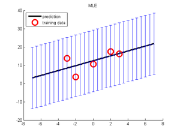
We see that the fitted function is very 'wiggly', and fits the noise. This is common when we have very little data compared to the number of parameters (in this example, we have N=21 data points, and 15 parameters, since we fit a degree 14 polynomial).
Using Bayesian inference with an uninformative prior does not help, since the mean of the posterior predictive distribution can be obtained by plugging in the posterior mean parameter, which is equal to the MLE:
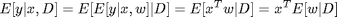
What we need is an informative prior, that encodes our preference for simpler models. A popular away to achieve this is to use a zero-mean spherical Gaussian prior of the form 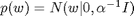, where 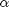 is the precision (strength) of the prior. This says that, a priori, we expect the regression weights to be small, which means we believe the function is simple/ smooth (not "too wiggly"). We can compute the posterior of w with this prior using a variety of different models/ likelihood functions. But a computationally simpler approach is to use MAP estimation (aka regularization), which just computes the posterior mode, which is given by
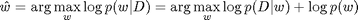
In the case of a Gaussian likelihood (linear regression) and Gaussian prior, we get
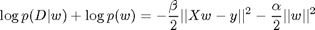
where 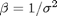 is the precision of the measurement noise. If we define 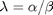 to be the amount of regularization, we can rewrite this as follows:
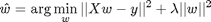
We see that this is a least squares problem with an L2 penalty on the weight vector (this is known as ridge regression). Below we show how to fit this model for several settings of 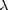. We see that increasing results in a smoother fit.
lambdas = [0.00001, 0.001]; NL = length(lambdas); for k=1:NL lambda = lambdas(k); model = linregFit(Xtrain, ytrain, 'lambda', lambda, 'preproc', pp); [ypredTest] = linregPredict(model, Xtest); figure; scatter(xtrain, ytrain,'b','filled'); hold on; plot(xtest, ypredTest, 'k', 'linewidth', 3); title(sprintf('lambda %5.3f', log10(lambda))) end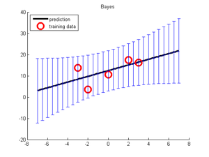 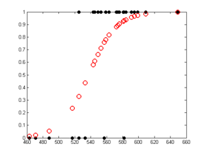
If is too small, the model will overfit (since the function is too wiggly), but if it is too big, the model will underfit (since the function is too smooth). This is illustrated below, where we examine the measn squared error on the training and test sets as a function of . This illustrates the characteristic U-shape on the test set.
lambdas = logspace(-10,1.2,9); NL = length(lambdas); testMse = zeros(1,NL); trainMse = zeros(1,NL); for k=1:NL lambda = lambdas(k); [model] = linregFit(Xtrain, ytrain, 'lambda', lambda, 'preproc', pp); ypredTest = linregPredict(model, Xtest); ypredTrain = linregPredict(model, Xtrain); testMse(k) = mean((ypredTest - ytest).^2); trainMse(k) = mean((ypredTrain - ytrain).^2); end figure; hold on ndx = log(lambdas); % 1:length(lambdas); plot(ndx, trainMse, 'bs:', 'linewidth', 2, 'markersize', 12); plot(ndx, testMse, 'rx-', 'linewidth', 2, 'markersize', 12); legend('train mse', 'test mse', 'location', 'northwest') xlabel('log regularizer')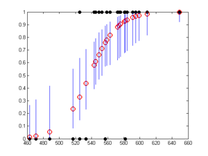